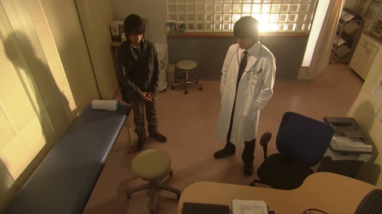
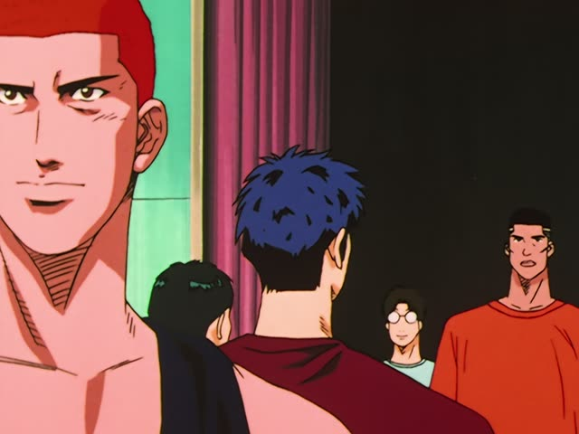
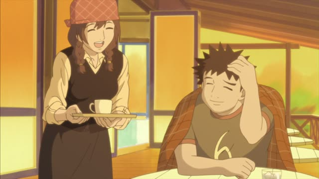
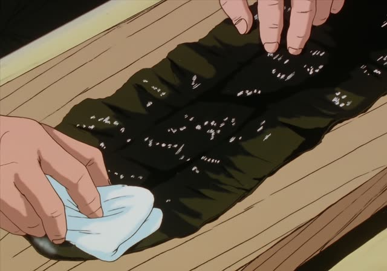
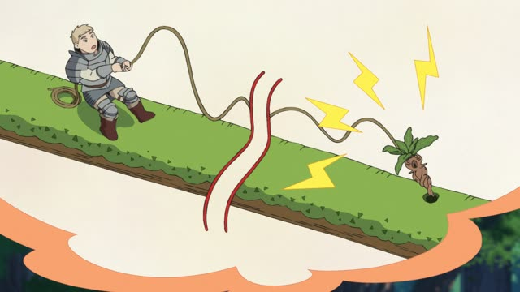
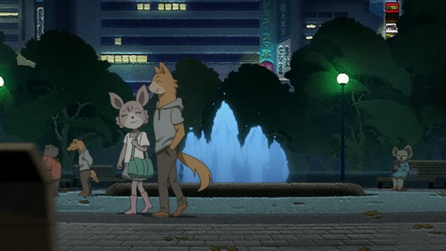
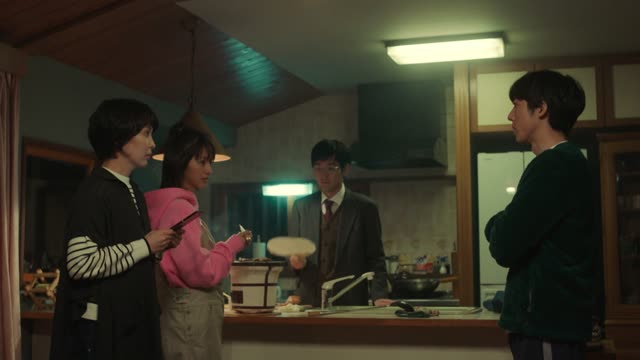
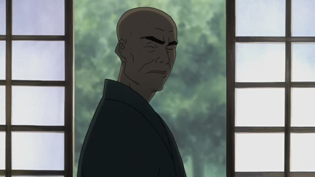

～ずに

1 Litre of Tears · Episode 11
希望を捨てずに、頑張りましょう。
"Let's keep going without giving up hope." [a doctor's words, read aloud]
～ずに means "without doing", the same as ～ないで, but a bit more written and set. Take the ない-form, drop ない, and add ずに: 捨てない → 捨てずに.
The one odd verb: する → せずに (not しずに). On this card, Aya's mother reads the doctor's words: keep going without giving up hope. 頑張りましょう makes it polite.
You hear it in speech too, in set phrases: 忘れずに (don't forget to), そう言わずに (come on, don't say that).

Slam Dunk · Episode 92
忘れずに持ってきてね。
"Don't forget to bring it." [the money for the training camp]
On this card, Haruko tells the team to bring the camp money. 忘れずに: "without forgetting", so "make sure to".
Quick Examples
A sign at the station.
切符を忘れずにお持ちください。
"Please don't forget your ticket."
忘れずに: a very common set phrase.
PoliteYour friend asks how you got home.
誰にも会わずに帰った。
"I went home without seeing anyone."
Same as 会わないで.
CasualYour coach gives advice.
あきらめずに続けてください。
"Keep going, don't give up."
PoliteYour friend left in a hurry.
何も言わずに出ていった。
"He left without saying anything."
CasualWith and without
何も言わないで出ていった。
"He left without saying anything." Everyday speech.
何も言わずに出ていった。
"He left without saying anything." Same meaning, a bit more written.
Examples from Media

Shirokuma Cafe · Episode 12
お気になさらずに。
"Please don't worry about it."
Very polite set phrase: なさる (respectful する) + ずに.

Oishinbo · Episode 12
ダシ昆布は洗わずに、布で拭くだけにする。
"You don't wash the kombu, you just wipe it with a cloth."

Dungeon Meshi · Episode 2
これなら犬を使わずに済む。
"This way we can get by without using the dog."
～ずに済む = to get by without.
Good Morning Call · Episode 15
脅迫なんかに負けずに頑張ろうね、上原君。
"Let's hang in there without giving in to threats, Uehara."

Odd Taxi · Episode 6
余計なことせずに、剛力に任せればいい。
"Don't do anything extra, just leave it to Goriki."
する → せずに.
Nausicaä of the Valley of the Wind
姫様～！武器も持たずに…
"Princess! Without even a weapon..."

Quartet · Episode 2
好きな人には好きって言わずに
"Instead of saying "I love you" to the one you love..."
The line goes on: you say "I want to see you".

Samurai Champloo · Episode 10
薪割りと障子張りも忘れずに。
"And don't forget the firewood and the paper screens."
The verb after it is left out: 忘れずに (やってね).